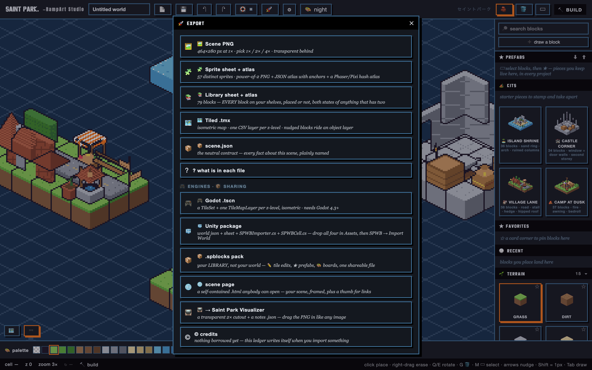
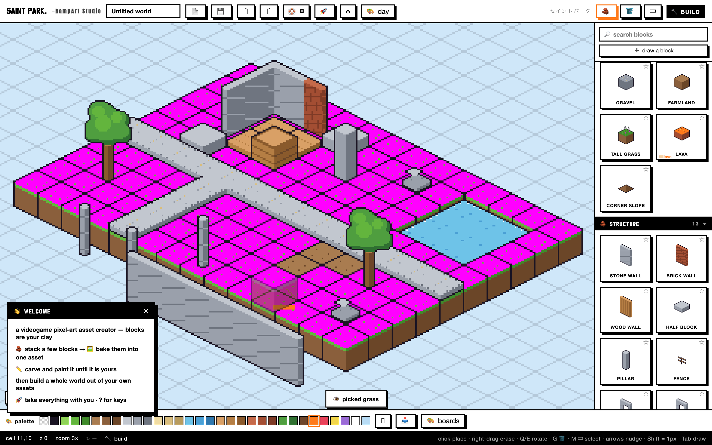
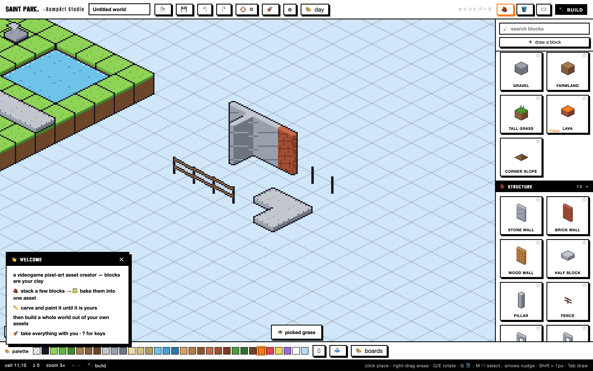
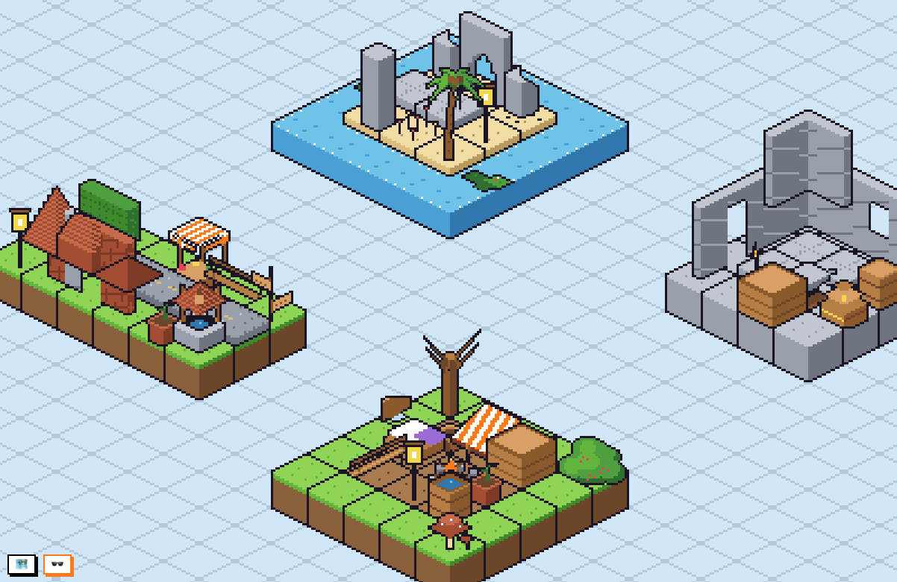
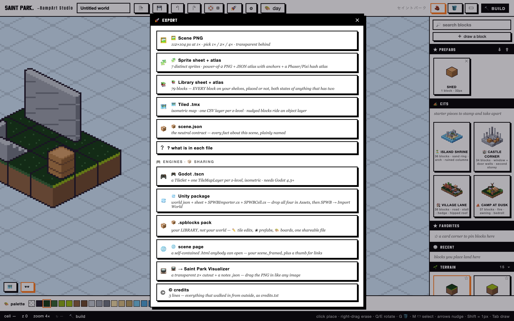

RampArt Studio is a videogame pixel-art world builder that runs from a single HTML file. Drag parametric blocks that autotile themselves; recolor an entire world by dragging one palette swatch; draw on top with real pixel tools; export to PNG, sprite sheets, Tiled, Godot, or Unity. No install, no network, no account. Open the file and build.
- ONE FILE · ~9,200 LINES
- 465-CHECK SMOKE SUITE
- 532 BROWSER ASSERTS
- ZERO DEPENDENCIES
- MIT · FREE & PUBLIC
The most important feature is one I deleted:
a working 3D engine.

The problem
RampArt solved a simple problem for me: creating isometric art is hard. It was built to be an accessible on-ramp: a way in for creators who want to try a new style.
Decision one: the engine I deleted
Midway through the build, I started on a 3D engine that could make assets with the same tile-based workflow, inspired by things like Octopath Traveler and Crocotile3D. And it worked: 3,648 lines of custom WebGL, a voxel ambient-occlusion mesher, a palette-LUT shader, a DDA picker. It passed its verification gates.
Then I realized the tool was losing the spirit of what I'd designed. The simple editor had become a bloated, awkward mix of mesh creator and level editor. Deleting it brought back the original simple, expressive design the tool was capable of.
The engine wasn't wasted, either. It was archived, audited, and its best ideas became TilePark 3D, a separate tool with its own promise.
Decision two: the painter's palette
Every Saint Park tool holds one standard: a first click that produces a usable result, with the deep knobs one layer down. In RampArt that standard is structural: blocks are parametric recipes rasterized per style profile, and the whole world's color is indexed to one palette.
I wanted this tool to feel intuitive and interactive. You don't menu-dive when you splash paint on a canvas. The same should apply to your creative software. Everything is a mouse click away, with the deeper tools hidden just underneath.



Decision three: spec first, gates always
RampArt was built entirely in Claude Code. I designed the tool and directed the agents every step of the way: I started by writing a detailed spec, gave it to the AI team, directed them through it, and supervised all changes. "Done" was an unacceptable word until I had a functioning and usable product.
The receipts: nothing shipped until a 465-check smoke suite and a 532-assert real-browser run came back green, and the engineering ledger records the unfixed nits as honestly as the wins.

What's next
In my next builds I'll be factoring in a more structured workflow, along with a build HQ. And to keep brand identity and feature parity across projects, I've already implemented a Brain: a master context that new AI instances read to catch up before they touch anything.
RampArt Studio is free and public under the MIT License. Open it and build.